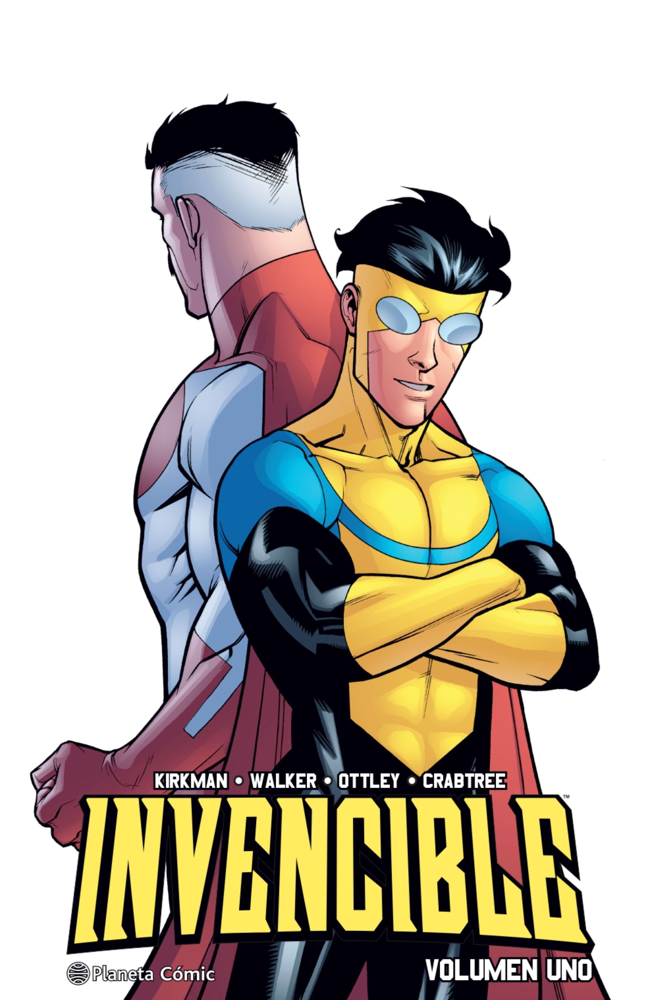
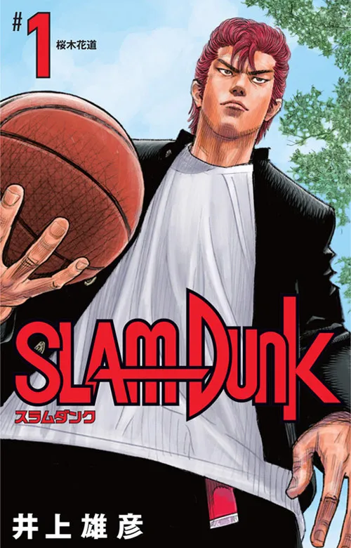
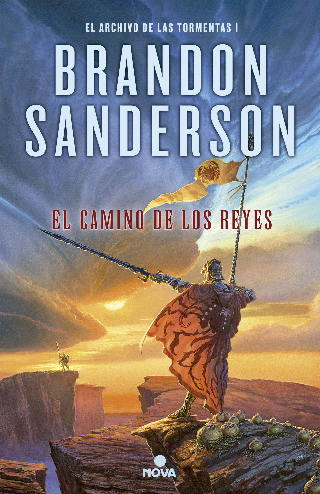

Mis favoritos
En esta sección compartiré los libros, mangas y cómics que han dejado una huella profunda en mi vida, aquellos que más me han emocionado o que simplemente me han fascinado. Son mis recomendaciones personales para todos los que deseen sumergirse en el mundo de la lectura y descubrir historias que, sin duda, marcarán la diferencia

Invencible
Robert Kirkman
"Invincible" sigue a Mark Grayson, un adolescente que descubre sus superpoderes al cumplir 17 años. Su padre, Omni-Man, es el héroe más poderoso del mundo, pero a medida que Mark explora sus habilidades, descubre que el legado de su padre es mucho más oscuro de lo que imaginaba. La serie aborda temas de poder, responsabilidad y las complejas consecuencias de ser un héroe

SlamDunk
Takehiko Inoue
"Slam Dunk" sigue a Hanamichi Sakuragi, un rebelde estudiante de secundaria que se une al equipo de baloncesto para impresionar a una chica. Aunque empieza sin talento, desarrolla una verdadera pasión por el deporte y se convierte en un jugador esencial para su equipo, Shohoku. La serie narra su crecimiento tanto en el baloncesto como en su vida personal, mientras el equipo lucha por el campeonato nacional.

El archivo de las tormentas
Brandon Sanderson
"El Archivo de las Tormentas" es una serie de fantasía épica de Brandon Sanderson, ambientada en el mundo de Roshar, donde las tormentas devastadoras han forjado la civilización. La trama sigue la lucha contra una antigua amenaza, los Portadores del Vacío, y la recuperación de la magia de los Radiantes. A través de personajes como Kaladin, un esclavo que se convierte en soldado; Shallan, una joven con un pasado oscuro; y Dalinar, un príncipe en busca de la verdad, la serie explora la magia, la política y el destino de un mundo al borde de la destrucción.